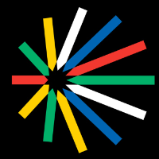

Projeto
Ministério da Cultura / PRONAC
Avaliação técnica de projetos culturais
Atuação como avaliador técnico e parecerista de propostas, projetos e planos de ação culturais vinculados ao PRONAC e a processos de seleção cultural. A experiência combina análise de mérito, emissão de pareceres, participação em júris e leitura técnica de projetos em cultura, cinema, audiovisual, memória e território.
Parceiros: Ministério da Cultura, SEFIC/MinC, PRONAC

Detalhes
- O que é
- Frente de avaliação técnica de projetos culturais, com atuação em propostas e planos de ação demandados pelo Ministério da Cultura e entidades vinculadas. O trabalho envolve leitura de escopo, aderência a critérios, consistência metodológica, viabilidade, impacto cultural e emissão de parecer técnico.
- O que fiz
- Análise de propostas culturais, participação em processos de avaliação e júri, sistematização de argumentos técnicos e produção de pareceres. A atuação inclui formação na Oficina de Ambientação de Pareceristas do MinC e experiência acumulada em avaliação cultural nos últimos anos.
- Comprovações
- Notas de empenho SIAFI 2025 e 2026 referentes a serviços de análise e emissão de parecer técnico, certificado da Oficina de Ambientação de Pareceristas do MinC e certificados de participação em processos culturais e audiovisuais.
- Avaliação em outros projetos
- Participação como membro de júri técnico do Prêmio ABC de Cinematografia 2026, com análise de 13 obras audiovisuais na categoria Direção de Fotografia - Longa-Metragem Documentário. A documentação também registra experiências relacionadas ao Projeto Rotas Negras UFSM e a processos culturais de seleção, ativação urbana e novos talentos.